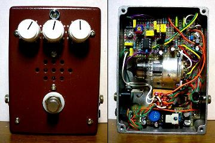
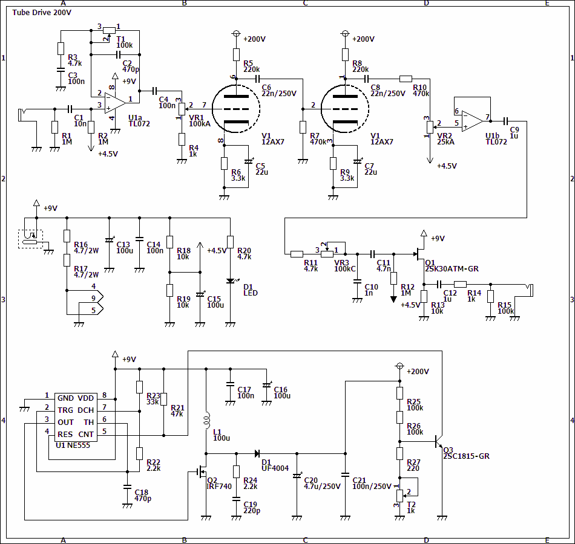
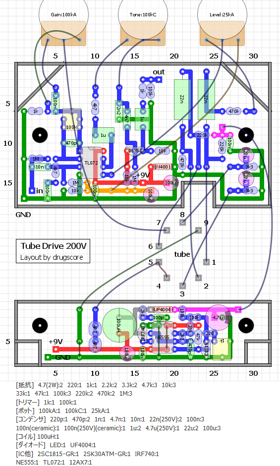
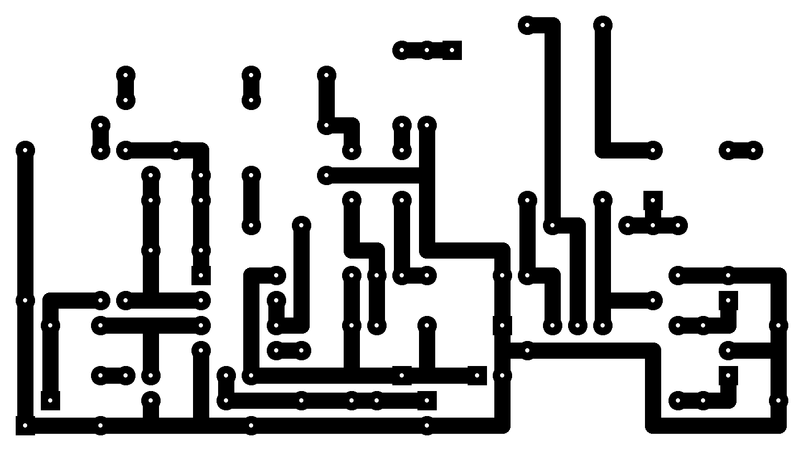
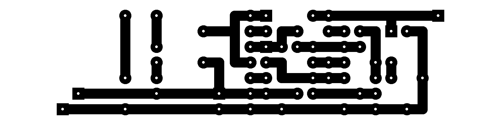

Tube Drive 200V
2010年04月05日 カテゴリー：自作エフェクター（アナログ）

前回作成した9V→200Vの昇圧回路を使って真空管オーバードライブを作りました。
▽回路図

通常の真空管の増幅回路にブースターとRAT風トーン回路をつけ加えただけの回路です。ブースター部分のゲインはトリマーにしました。発振しやすいのでこのゲインはあまり上げられません。もう少し帯域をしぼった方が良いと思われます。高音域はC2やC10の値を大きくすれば下がります。低音域はC11の値を小さくすると下がります。もう少し簡単に調整できた方がいいかもしれません。
真空管のヒーター電圧6.3Vを得るために9Vを抵抗で6V（実測値は5.9V）に下げています。その分熱になって無駄になってしまうので、できれば12V供給で直接ヒーターにつなげる方がよいです（その場合配線の仕方が変わります）。消費電流は全体で450mA弱になりました。電池では動きません。
▽レイアウト

▽PCB上（横81.3mm縦45.7mm）

▽PCB下（横81.3mm縦20.3mm）

電源部分の基板を分けています。意外と上側の基板がスカスカなので1つにまとめるのも可能だったかもしれません。ケースはタカチのTD9-12-4Nです。
音はというと真空管っぽい粘りがあるような気がします。そのうち波形を測定してみる予定です。結構歪むんですがゲインを上げすぎると発振します。※発振にはくれぐれも注意してください。ノイズは若干多めかなと思います。
4時間程度通電状態で放置してみましたが、発熱は大丈夫なようです。ただ電圧が180V程度に落ちていました。空気のない音というブログで同様の昇圧回路が検討されているのですが、そのブログによると昇圧回路に使っているトランジスタの温度変化のために電圧が落ちるそうです。MOS-FETにすると少しはマシになるらしいです。まぁ多少電圧が下がるぐらいは大して問題はないと思います。塗装にはアルミ用の塗料を使ってみたんですが、確かに値段が高い分塗料の食いつきはよさそうです。
まだまだ改善点がありそうな感じですが、ひとまず成功ということにしておきます。
（2016年11月9日部品リスト・PCB追加）